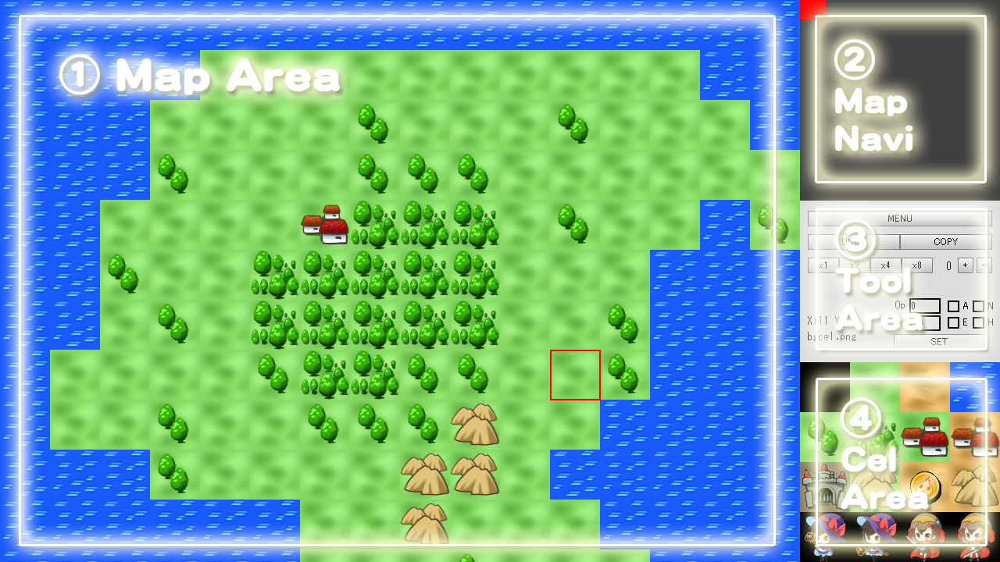
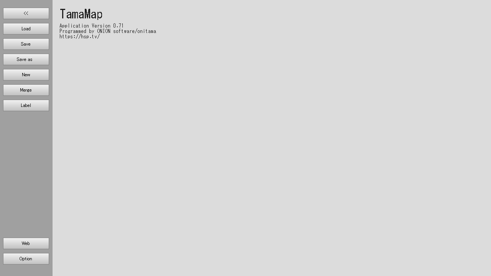

HSP : Hot Soup Processor ver3.7 / onion software 2023-(c)
マップエディタ Tamamap マニュアル

はじめに
Tamamapは、珠音ドットフレームワークで使用可能な2Dベースのセル(タイル)マップを編集するためのツール(マップエディタ)です。
以下のような特長を持っています。
・任意サイズの2Dマップを編集 ・セルの属性設定及び編集 ・珠音ドットフレームワークと連携 ・マップのファイル(.tmap形式)ロード、セーブ、マージ ・HSP3Dishベースで作られたツールのため、Linux,RaspberryPi環境でも動作可能
広い世界を手軽に構築するための様々な機能を持っています。
使用方法
Tamamapは、標準スクリプトエディタのメニューから起動可能です。
「ツール」メニューの「マップエディタを開く」項目を選択することで、Tamamapが起動されます。
hspsdk/tamamap/tamamap.hsp
HSPフルパッケージ上記の場所にソースコードが含まれていますので、このファイルをHSPスクリプトエディタから読み込み実行することで使用することも可能です。
ツールの画面説明

ツールの画面は、大きく4つのエリアに分かれています。それぞれ、マップエリア、マップナビ、ツールエリア、セルエリアと呼ばれます。
1つのウインドウ内にある機能を適切に使いながらマップの編集を行います。
マップエリア
編集中のマップが表示されるエリアです。広いマップの一部をスクロールして表示します。
マップナビで現在表示されている位置を調整できるほか、カーソルキーの上下左右でスクロールさせることが可能です。 また、表示倍率はツールエリアのボタンにより変更可能です。
マウスの左クリックでカーソル位置のマップを設定できます。設定されるセルは、セルエリアで選択されているセルになります。
マウスの右クリックでカーソル位置のマップにあるセルを参照して選択することができます。
マップナビ
マップ全体の中で、マップエリアが表示している位置とサイズをガイドします。
マウスの左クリックで、スクロール表示されている位置を直接変更することができます。
ツールエリア

現在のカーソル位置や選択されているセルの情報を表示します。
また、マップエディタの機能を選択するためのインターフェースがまとめられています。
それぞれ以下の機能を持っています。
- MENUボタン
メニュー画面を開きます。
- UNDOボタン
1つ前の状態に戻します、1段階のみ戻すことが可能です
- COPYボタン
マップの一部(矩形)をコピーします。最初にコピーする左上のブロックを選び、次に右下のブロックを選ぶことでその矩形範囲をコピーするモードに入ります。以降は、左ボタンを押すことでカーソル位置にコピー元のマップがコピーされます。
- ×1～×8ボタン
マップエリアの拡大率を指定します
- +、-ボタン
セルエリアのバンク(表示位置)を移動させます
- SETボタン
セルエリアで選択されているセルに対して、Op値、Gr値、A,N,E,Hのフラグ状態を設定します。複数選択されている場合は、すべてのセルに対して同一の内容を設定します
- Op値
Op(Option)値を直接入力します。この値はスクリプト上で汎用的に使用可能な値です。
- Gr値
Gr(Group)値を直接入力します。珠音ドットフレームワークでは、優先順位の設定に使用されます。0が通常表示、1にした場合はスプライトより手前に背景が表示されます。
- A(Animation)フラグ
マップセルに対して4パターンのアニメーション表示を適用します
- N(Notice)フラグ
マップセル表示時の通知(Notice)フラグを有効にします
- E(Event)フラグ
マップセル当たり判定時のイベント(Event)フラグを有効にします
- H(Hold)フラグ
マップセル当たり判定時のHoldフラグを有効にします、これは上からぶつかった時に侵入不可となります。H(Hold)フラグとE(Event)フラグを同時にセットした場合は、すべての方向から侵入不可の壁となります。
セルエリア
マップの元となるセル(パーツとなる画像)を表示し、その一部を選択することができます。
選択されたセルは、マップエリアで配置することができます。
また、選択されたセルの属性をツールエリアで設定することが可能です。
セルエリア内でマウスの左または右クリックをすることで、カーソル位置にあるセルが選択されます。
右クリックを押しながら範囲を選択することで、複数のセルを選択することが可能です。
メニュー画面

メニュー画面では、ファイルの操作やツールのオプション変更などを行います。
- <<
メニューを終了しエディタ画面に戻ります
- Load
ファイルを読み込みマップを編集できるようにします
- Save
編集中のマップをファイルに保存します
- Save as...
編集中のマップを別名でファイルに保存します
- New
編集中のマップを破棄し、新規のマップを初期化します
- Merge
現在編集中のマップに別なファイルのマップから一部を取り出してマージ(合成)します
- Label
汎用的に使用するマップのラベル情報を編集します、ここで指定した値はマップデータ読み込み時にスクリプトから参照することが可能です
- Web
関連するWebページを表示します
- Option
ツールのオプションを編集します
著作権、ライセンスについて
Tamamapの著作権、ライセンスは、「HSP開発システム」と同様です。 ソースコードの改造、改変、公開については、自由に行って頂いて構いません。